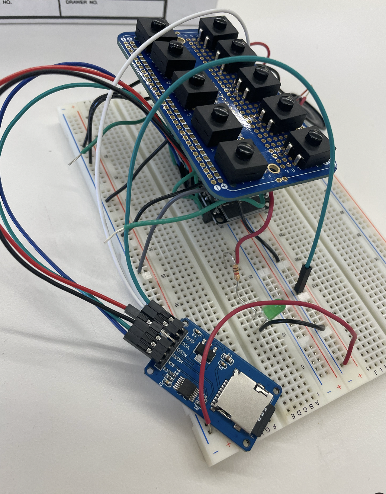
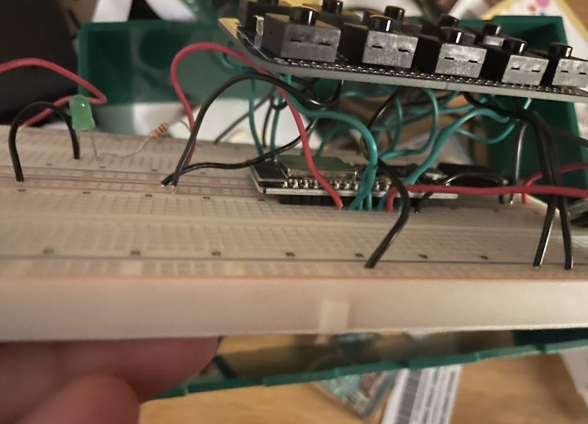

<br>
#### Final Project
<p1>
For my final project I was making what was essentially a music box where if you press a specific button, it would play
a guitar sound. However this would prove to be harder than anticipated. Looking at my initial configuration of the wiring
you can see that I was trying to use a micro SD module that could read in different sounds so that I can then play them
by pushing the buttons.
<p1>

<p1>
However, no sounds were actually playing so I then searched online to see what the issue was and when I finally
figured it out, I saw that even when I got it workign it would have a really bad delay every time and so instead of
loading in sounds, I just used the sounds from the pitches library and had a different note associated with different buttons.
I also had an LED set up in order to ensure that the sounds and the wiring were playing and were correct.
<p1>

<pre>
<code>
#include "pitches.h"
//#include <FS.h>
// #include <SD.h>
//#include <SPI.h>
// constants won't change. They're used here to set pin numbers:
const int buttonPin = 33; // the number of the pushbutton pin
const int buttonPin2 = 25;
const int buttonPin3 = 26;
const int buttonPin4 = 27;
const int buttonPin5 = 12;
const int buttonPin6 = 15; // the number of the pushbutton pin
const int buttonPin7 = 19;
const int buttonPin8 = 21;
const int buttonPin9 = 22;
const int buttonPin10 = 23;
const int ledPin = 32; // the number of the LED pin
int notes[] = {
NOTE_C4, NOTE_D4, NOTE_E4, NOTE_F4,
NOTE_G4, NOTE_A4, NOTE_B4, NOTE_C5,
NOTE_D5, NOTE_E5
};
//File audioFile;
// variables will change:
int buttonState = 0; // variable for reading the pushbutton status
int buttonState2 = 0;
int buttonState3 = 0;
int buttonState4 = 0;
int buttonState5 = 0;
int buttonState6 = 0;
int buttonState7 = 0;
int buttonState8 = 0;
int buttonState9 = 0;
int buttonState10 = 0;
void setup() {
// initialize the LED pin as an output:
//Serial.begin(9600);
pinMode(ledPin, OUTPUT);
// initialize the pushbutton pin as an input:
pinMode(buttonPin, INPUT_PULLUP);
pinMode(buttonPin2, INPUT_PULLUP);
pinMode(buttonPin3, INPUT_PULLUP);
pinMode(buttonPin4, INPUT_PULLUP);
pinMode(buttonPin5, INPUT_PULLUP);
pinMode(buttonPin6, INPUT_PULLUP);
pinMode(buttonPin7, INPUT_PULLUP);
pinMode(buttonPin8, INPUT_PULLUP);
pinMode(buttonPin9, INPUT_PULLUP);
pinMode(buttonPin10, INPUT_PULLUP);
// if (!SD.begin()) {
// Serial.println("SD initialization failed!");
// return;
// }
// Serial.println("SD initialization done.");
// //audioOutput.enableAmplifier();
// Serial.begin(115200);
}
void loop() {
// read the state of the pushbutton value:
buttonState = digitalRead(buttonPin);
buttonState2 = digitalRead(buttonPin2);
buttonState3 = digitalRead(buttonPin3);
buttonState4 = digitalRead(buttonPin4);
buttonState5 = digitalRead(buttonPin5);
buttonState6 = digitalRead(buttonPin6);
buttonState7 = digitalRead(buttonPin7);
buttonState8 = digitalRead(buttonPin8);
buttonState9 = digitalRead(buttonPin9);
buttonState10 = digitalRead(buttonPin10);
// check if the pushbutton is pressed. If it is, the buttonState is HIGH:
if (buttonState == 0) {
// turn LED on:
tone(14, notes[0], 5);
//AudioZero.play(myFile);
//playWavFile("G_chord.wav");
digitalWrite(ledPin, HIGH);
//Serial.println(buttonState);
}
if (buttonState2 == 0) {
// turn LED on:
tone(14, notes[1], 5);
//tone(2, notes[1], 5);
digitalWrite(ledPin, HIGH);
//Serial.println(buttonState);
}
if (buttonState3 == 0) {
// turn LED on:
tone(14, notes[2], 5);
digitalWrite(ledPin, HIGH);
//Serial.println(buttonState);
}
if (buttonState4 == 0) {
// turn LED on:
tone(14, notes[3], 5);
digitalWrite(ledPin, HIGH);
//Serial.println(buttonState);
}
if (buttonState5 == 0) {
// turn LED on:
tone(14, notes[4], 5);
digitalWrite(ledPin, HIGH);
//Serial.println(buttonState);
}
if (buttonState6 == 0) {
// turn LED on:
tone(14, notes[5], 5);
digitalWrite(ledPin, HIGH);
//Serial.println(buttonState);
}
if (buttonState7 == 0) {
// turn LED on:
tone(14, notes[6], 5);
digitalWrite(ledPin, HIGH);
//Serial.println(buttonState);
}
if (buttonState8 == 0) {
// turn LED on:
tone(14, notes[7], 5);
digitalWrite(ledPin, HIGH);
//Serial.println(buttonState);
}
if (buttonState9 == 0) {
// turn LED on:
tone(14, notes[8], 5);
digitalWrite(ledPin, HIGH);
//Serial.println(buttonState);
}
if (buttonState10 == 0) {
// turn LED on:
tone(14, notes[9], 5);
digitalWrite(ledPin, HIGH);
//Serial.println(buttonState);
}
else {
digitalWrite(ledPin, LOW);
// turn LED off:
//Serial.println(buttonState);
}
}
// void playWavFile(const char *filename) {
// // if (audioFile) {
// // audioFile.close();
// // }
// audioFile = SD.open(filename);
// if (!audioFile) {
// Serial.println("Error opening file!");
// return;
// }
// while (audioFile.available()) {
// Serial.write(audioFile.read());
// }
// audioFile.close();
// }
</code>
</pre>